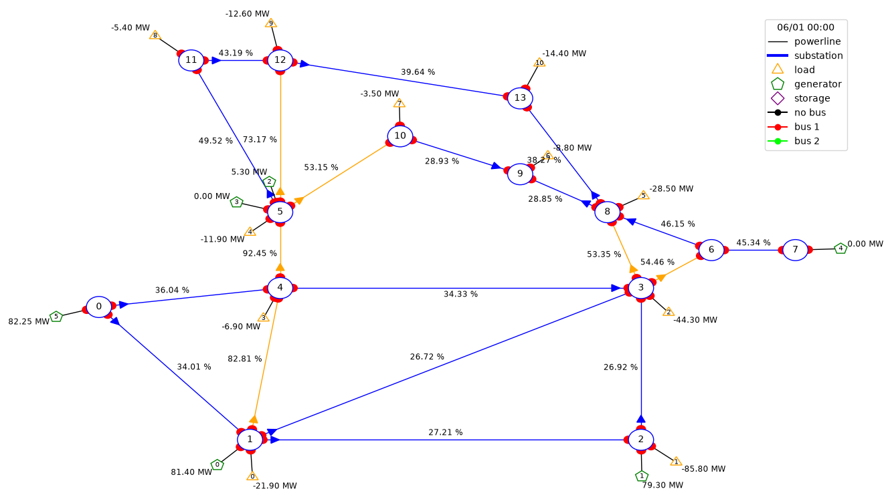
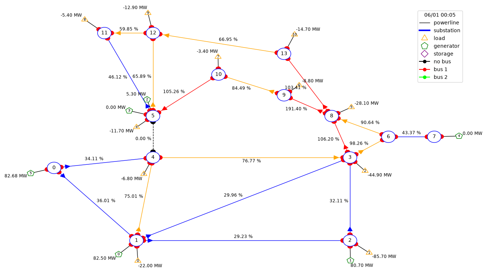
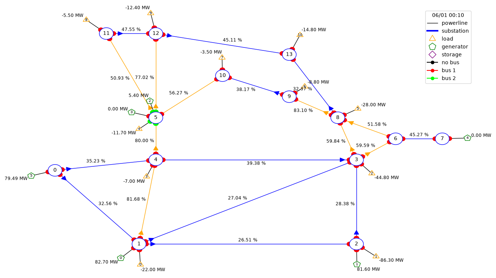

Grid Operation Agent — Spike Walkthrough
Challenge 5: an agent that returns an overloaded power grid to a safe state
and narrates its reasoning. This page shows the spike that proves the core
demo loop works on the IEEE case14 grid (Grid2Op).
1. Pipeline
Healthy grid
rho max 0.92
→
N-1 event
disconnect most-loaded line
→
Overload
4 lines > 100%
→
Search 178 actions
via obs.simulate()
→
Apply best
bus split
→
Safe state
rho max 0.83, 0 overloads
2. Click through the stages
1. Healthy
2. Overloaded (N-1)
3. Rescued
Max line loading (rho)0.924
Overloaded lines0

Starting point: IEEE case14, all 20 lines within limits.
Max line loading (rho)1.914
Overloaded lines4

N-1 event: line 5–9 (highest loaded, dashed in plot) is disconnected.
Flow reroutes onto neighboring lines — four now exceed 100% capacity
(red edges, up to 191%). This is the unsafe state the agent must fix.
Max line loading (rho)0.831
Overloaded lines0

Best of 178 candidate topology actions (bus splits), found by simulating
each with obs.simulate() and picking the lowest resulting
max rho. Applied to the live env → grid back to a safe N-0 state.
3. What this proves
- Physics engine works: Grid2Op/pandapower power flow runs and
responds correctly to topology changes.
- Redispatch alone is too weak for this scenario (barely moves rho)
— topology actions are the real lever. Important for agent tool design.
- Fast enough for an agent loop: 178 simulations in seconds →
can be exposed as a
simulate_action tool an LLM calls
repeatedly.
- Built-in baseline: brute-force topology search is the benchmark
to beat — agent's edge is narrated reasoning + smarter search on
bigger grids where brute force explodes combinatorially.
4. Next: agent loop
get_grid_state
→
LLM proposes candidate actions
→
simulate_action (tool)
→
apply_action + narrate
Engineer: build the 3 tools + agent loop. Energy expert: pick
dramatic-but-solvable scenarios, define the safe-state metric, sanity-check
agent actions against grid physics.